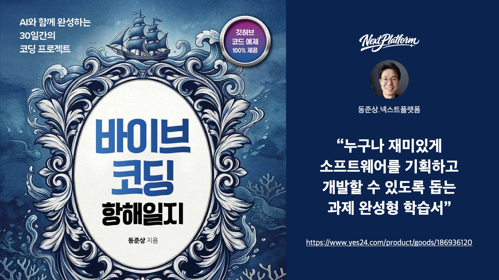

1부
첫 항해를 위한 준비 — AI 항해사와의 첫 만남
웹앱 구조 이해와 첫 배포 · HTML / CSS / JS, GitHub
대표 프로젝트
- 나만의 랜딩 페이지 생성기
- 하루 할 일(To-Do) 메모 앱
- GitHub Pages 자동배포 워크플로

The Vibe Coding Log: A 30-Day Voyage
누구나 재미있게 소프트웨어를 기획하고 개발할 수 있도록 돕는 과제 완성형 학습서
『바이브코딩 항해일지 – AI와 함께한 30일간의 프로젝트』는 바이브코딩을 처음 시작하는 분을 위한 일일 도전과제 완성형 입문서예요. 하루 하나씩, 작은 웹앱을 만들고 배포해 보며 “나도 소프트웨어를 만들 수 있다”는 성취감을 쌓아 갑니다.
코딩이 처음이어도 괜찮아요. 함께 항해할 동료를 찾고 있어요.
이 책은 “이미 개발자”가 아니라, 재미있게 소프트웨어를 만들어 보고 싶은 분을 위해 썼어요. 중·고등학생부터 대학 비전공자, 현업 실무자·교사까지 — 각자의 목표에 맞게 같은 30일 항로를 걸을 수 있습니다.
| 독자 | 주요 목적 | 이 책에서 얻는 것 |
|---|---|---|
| 중·고등학생 | 첫 코딩 경험, AI 활용 체험 | “나도 앱을 만들 수 있다”는 성취감 |
| 대학생 / 비전공자 | 프로젝트 포트폴리오 | Cursor·GitHub 등 실무 도구 익히기 |
| 현업 실무자 / 교사 | AI 교육·수업 설계 | 30제 로드맵, 강의·수업 커리큘럼 참고 |
개발 경험이 거의 없어도, AI와 협업하면 문제를 해결하고 웹앱을 직접 완성할 수 있어요.
바이브와 리듬이 살아 있는, 실습 중심의 바이브코딩 입문서
바이브코딩(VibeCoding)은 AI 시대의 새로운 프로그래밍 방식이에요. 이 책은 입문자 눈높이에서 “학습 목표 → 사용 도구 → 핵심 개념 → 프롬프트 예시 → 결과 요약”까지 한 번에 정리해, 막막함 없이 따라 할 수 있게 구성했습니다. 10-10-10, 30제 바이브 & 리듬 설계로 몰입은 높이고 피로는 낮춰요.
| 구간 | 시간 | 내용 |
|---|---|---|
| 1 | 10분 | 오늘의 목표와 프롬프트 이해 |
| 2 | 10분 | AI와 함께 1차 버전 구현 |
| 3 | 10분 | 실행·배포·결과 확인 및 확장 아이디어 |
5개의 바다를 건너, 기획부터 상용화까지 — 30일 항해 로드맵
책은 5부 30제로 구성되어 있어요. 앞부록일수록 웹 기초에 집중하고, 뒤로 갈수록 AI 자동화와 배포·결제까지 확장됩니다.
1부
웹앱 구조 이해와 첫 배포 · HTML / CSS / JS, GitHub
2부
데이터 연결과 API 이해 · fetch(), REST API
3부
사용자 상호작용 설계 · CRUD, 인증, 시각화
4부
AI 자동화와 프롬프트 설계 · GPT · Claude · Gemini
5부
배포 · 결제 · 상용화 · Stripe, Vercel, GitHub Actions
| 부 | 항해 구간 | 일차 | 난이도 | AI 비중 |
|---|---|---|---|---|
| 1부 | 첫 항해 준비 | 1~6 | ★☆☆ | 10% |
| 2부 | 데이터의 바다 | 7~12 | ★★☆ | 20% |
| 3부 | 교류의 바람 | 13~18 | ★★☆ | 30% |
| 4부 | 자동항해 모드 | 19~24 | ★★★ | 60% |
| 5부 | 귀항 | 25~30 | ★★★★ | 70% |
표를 펼치고, 첫 번째 프로젝트와 함께 출항할 준비가 되었나요?
책 한 권으로 30일간의 항해를 시작해 보세요. 구매 후에는 공식 깃허브 예제 모음에서 소스코드와 완성 앱 링크를 바로 확인할 수 있어요.